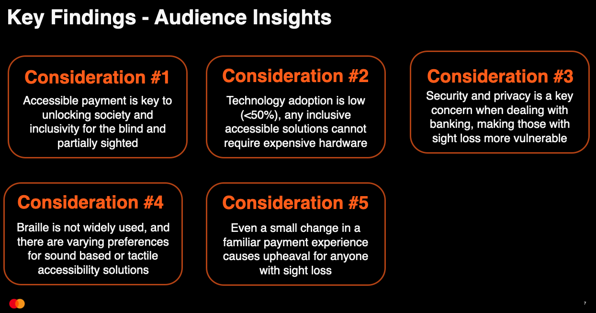
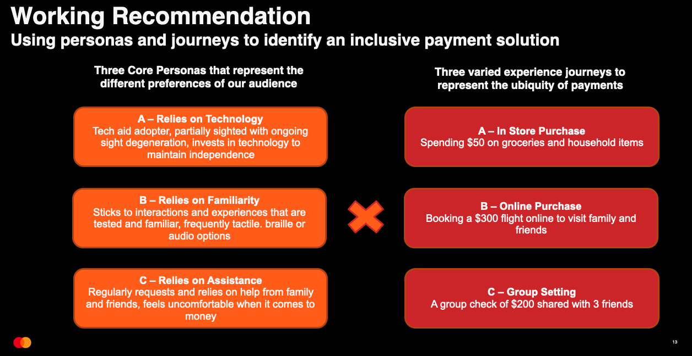
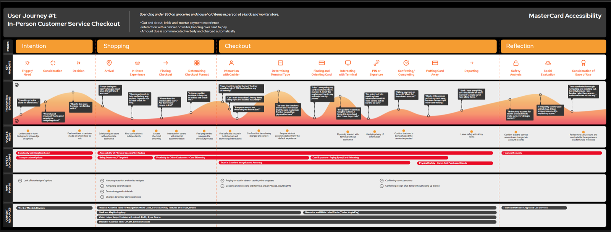
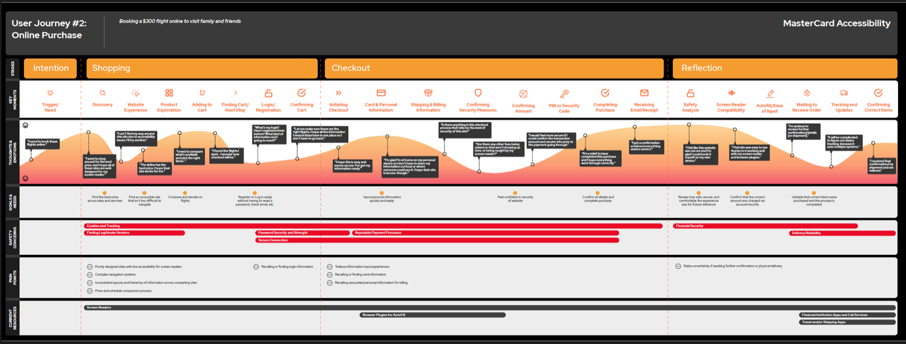
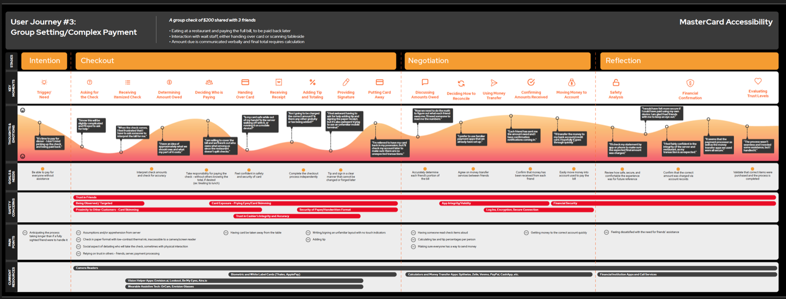

05 / Case Study — Inclusive Design
Mastercard
Payment journeys for Touchcard — a card built for blind and low-vision people — designed so paying is secure and independent, whether you’re buying groceries in-store, booking travel online, or splitting a bill with friends.
01 — Overview
Mastercard’s Touchcard is a payment card designed for people with visual impairments. The design question I worked on: how can it enable secure, independent transactions — without a cardholder having to rely on someone else to verify what’s happening with their card?
I mapped the journeys that answer it.

02 — The Challenge
Paying confidently, without sight, in three hard places
For a blind or low-vision cardholder, the risk isn’t abstract — it’s the moment of payment. We focused on three high-stakes scenarios: an in-store retail checkout, an online purchase, and a shared group payment split with friends.
In each, the core concern is security: without a way to verify card access or oversight, cardholders are forced to trust others with sensitive information. The goal was to design that trust back into their own hands.
03 — Approach
Map the whole journey through a low-vision lens
I treated the three scenarios not as separate problems but as chapters of one experience — viewed deliberately from the perspective of the people Touchcard is for.
- 1Studied what exists. Competitive analysis of related products — active and discontinued — surfaced features like tangible printed elements and biometric integration that support accessibility.
- 2Grounded ideation in real voices. Drew on existing user interviews and product reviews rather than assumptions.
- 3Pressure-tested the narratives. Brainstormed scenario-specific solutions through journey mapping, then tested the stories with the client and volunteers to find the pain points.
- 4Documented deeply. Detailed user journeys mapping key moments, thoughts and emotions, goals, safety concerns, pain points, and related resources.


04 — The Solution
Journeys that hand control back to the cardholder
The work produced detailed, scenario-specific user journeys — personas, key moments, and accessibility solutions — that give Mastercard a clear, human picture of how Touchcard performs where it matters most: the point of payment.
It turns an accessible card into the foundation of an accessible experience — one where cardholders don’t have to trust anyone else to pay with confidence.



05 — Impact
Designed for the people usually designed around
The impact of inclusive work is measured in who it includes — and in giving Mastercard a human, end-to-end view of independent, secure payment for blind and low-vision cardholders.
0
Scenarios mapped — in-store, online, group payment
0
Journey phases — intention to reflection
0+
Key moments mapped across journeys
06 — Reflection
Touchcard reinforced what I carry into every project: inclusive design isn’t a separate discipline, it’s design done honestly. Map an experience through the eyes of the person it excludes, and you don’t just help them — you surface the friction everyone was quietly tolerating.